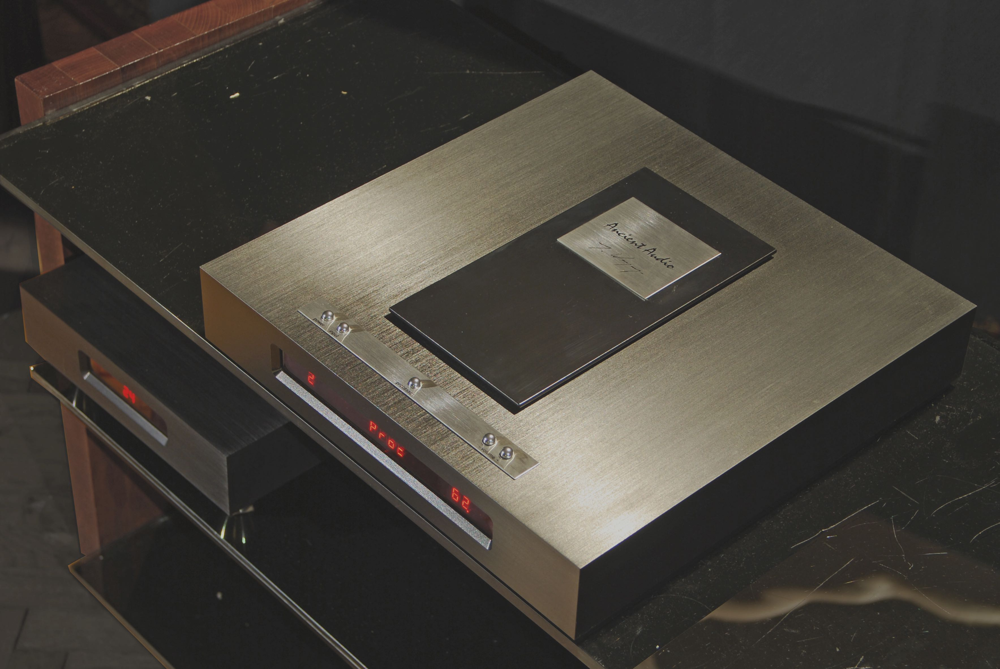

Silver Control
It was leading idea of designing of matched preamplifier. However, rapid developing digital audio, and invent Digital Speaker Processor paused us to more broad solution.
Finally, Silver Control is DAC/Processor/Preamplifier in one box. It accept PCM S/P DIF audio data , 16-24 bit, 36 to 211 kHz sampling rate. So, it can be driven by CD transport, audio streamer, computer or any other popular digital audio source.
For USB , we recommend USB to S/P DIF bridges, like M2Tech or other manufacturers Device includes famous Ancient Audio Processor, what controls speaker imperfections. It can include up to 127 different programs for many speaker system. It dramatically improves quality of speaker sound.
Silver Control can be driven by four analog sources, with line level . It can play as traditional preampliifer, or Processor as well, via low noise Analog to Digital Converters The DAC, and preamplifier section is well known, applied in famous Lektor Grand CD player. Wired by pure silver, it has fully balanced topology, and vacuum tube output stage.
Two high current, low impedance triodes 6H30 are used, separated by regarded V-Cap capacitors, Copper Teflon at input, and Oil impregnated at output. The volume control is pure analog, by switching of resistors set.
Low noise linear power supply , both for analog and digital part , was developed previously for Lektor Grand CD player. Silver Control can be versatile center of any vinyl, CD, streamer based hi-end system. Smooth but dynamic sound can drive every power amplifier
